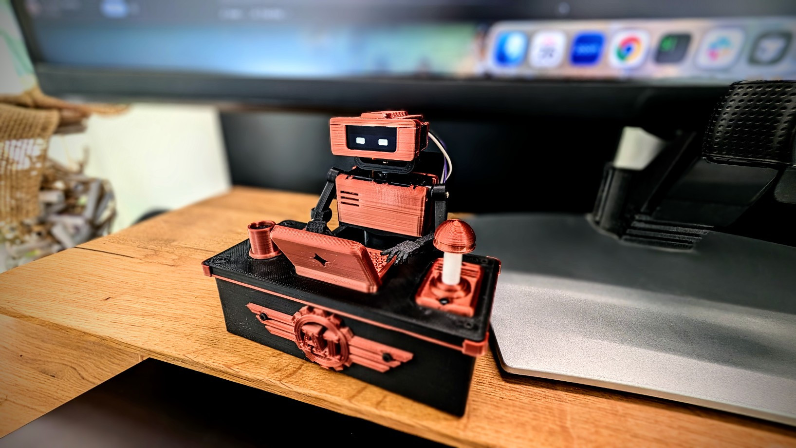

Desk robot · ESP32-C3
Your smallest engineering teammate.
Stop watching the terminal. Your teammate will ring when the job’s done.
- Readslooks around
- Writestypes
- Thinkslooks up
- Donerings bell
Control it
One CLI for the common IDEs. Any script that can POST works too.
$ npx -y tiny-engineer setup$ curl -X POST \
"http://tiny-engineer.local/anim?name=thinking"| You send | Robot does |
|---|---|
POST /anim?name=typing |
types |
POST /anim?name=reading |
reads |
POST /anim?name=thinking |
looks up |
POST /play |
speaks |
Cursor · Claude Code · Antigravity
Codex, Windsurf, CI, or a custom agent: POST /anim over Wi‑Fi, or USB serial when the network is locked down.
Build your own
Print → Connect → Flash → Assemble

- No printer: order printed parts
- New to electronics: optional From Code to Circuits
- Agent hooks after prove: integrations